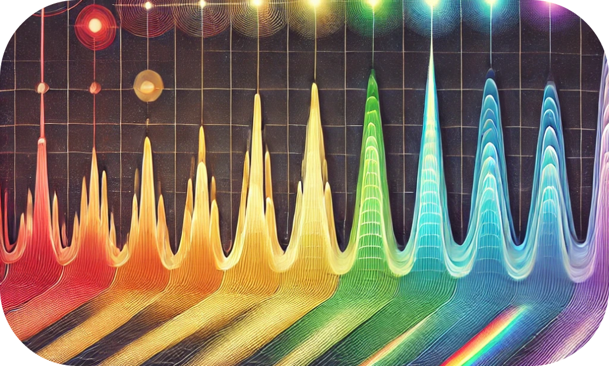
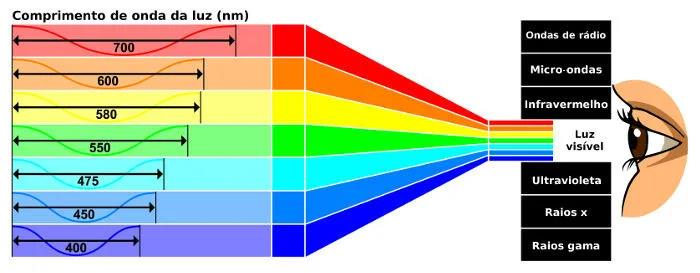
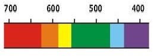

Resumos
1 - Frequência e comprimento das ondas eletromagnéticas
A frequência das ondas eletromagnéticas, por sua vez, diz respeito ao número de oscilações que o seu campo elétrico realiza a cada segundo, além disso, ondas com frequências mais altas carregam mais energia consigo. As ondas distribuem-se no espectro eletromagnético, classificando-se em: ondas de rádio, micro-ondas, infravermelho, luz visível, ultravioleta, raios X e raios gama. 
- Ondas de rádio: possuem baixa frequência e grandes comprimentos de onda (de metros a quilômetros).
- Micro-ondas: têm frequências maiores (de 1 GHz a 300 GHz) e comprimentos de onda menores, na faixa de milímetros a centímetros
- Infravermelho: frequências variam de 300 GHz a cerca de 400 THz, com comprimentos de onda que vão de 1 mm a cerca de 700 nm.
- Luz visível: frequências variam de cerca de 430 THz até 750 THz, com comprimentos de onda de aproximadamente 700 nm a 400 nm.
- Ultravioleta: tem frequências maiores e comprimentos de onda de 10 nm a 400 nm.
- Raios X: possuem frequências de 30 PHz até 30 EHz e comprimentos de onda muito curtos, de 0,01 a 10 nm.
- Raios gama: têm as maiores frequências (acima de 30 EHz) e os menores comprimentos de onda (menores que 0,01 nm)
2 - Espectro eletromagnético visível
O espectro eletromagnético visível é a faixa de comprimentos de onda do espectro eletromagnético que o olho humano consegue detectar. Essa faixa vai, aproximadamente, de 380 a 750 nanômetros (nm), onde cada comprimento de onda está associado a uma cor específica que enxergamos. Dentro desse intervalo: 
| Cor | Intervalo (NM) |
| Violeta | 380 a 450 |
| Azul | 450 a 495 |
| Verde | 495 a 570 |
| Amarelo | 570 a 590 |
| Laranja | 590 a 620 |
| Vermelho | 620 a 750 |
3 - Cores do espectro eletromagnético
- Violeta (380 - 450 nm):Percepção Humana: Percebido como uma cor profunda e intensa. À medida que o comprimento de onda se aproxima de 380 nm, a intensidade percebida diminui, pois a visão humana é menos sensível a essa faixa. Curiosidade: Os raios ultravioleta estão logo abaixo do violeta e são invisíveis, embora tenham energia suficiente para causar efeitos biológicos, como bronzeamento.
- Azul (450 - 495 nm): Percepção Humana: Os cones sensíveis ao azul são menos numerosos no olho humano, o que pode tornar o azul menos "brilhante" em algumas condições de luz.
- Ciano (Azul-claro) (495 - 505 nm): Percepção Humana: Cores ciano são comuns em fontes de luz modernas, como LEDs, e têm aplicações em impressões de alta definição.
- Verde (505 - 570 nm): Percepção Humana: O verde é uma das cores às quais nossos olhos são mais sensíveis, o que o torna importante para a visibilidade e relaxamento visual.
- Amarelo (570 - 590 nm): Percepção Humana: Amarelo é uma das cores mais visíveis a longa distância, o que o torna comum em sinais de alerta e segurança.
- Laranja (590 - 620 nm): Percepção Humana: Essa cor é menos visível que o amarelo, mas ainda é muito perceptível em comparação com o vermelho..
- Vermelho (620 - 750 nm): Percepção Humana: O vermelho é uma cor altamente visível e frequentemente associada a emoção e intensidade 